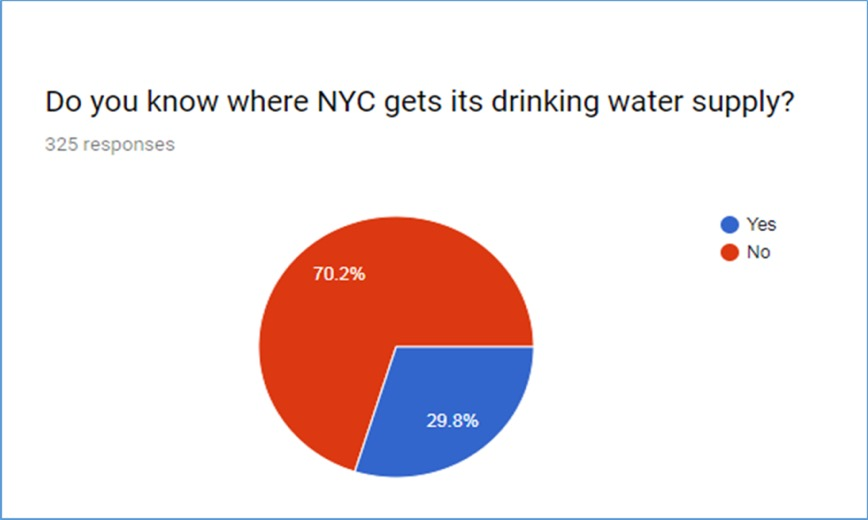

METHODS
Online Survey Review of literature on NYC water related issues, attitudes and perceptions of bottled water versus tap water use, as well as socio-cultural influences of those perceptions of water quality
Administered an online survey using email outreach and Google Survey with key questions focused on:Demographic variables, age, race, gender, etc.
Geolocation of residency (zip codes)
Knowledge of NYC drinking water source and water quality, Water purchase preferences, etc.
Statistical AnalysesUnivariate analysis summarize the survey results
Bivariate cross tabulations, to understand the interactions of survey response variables